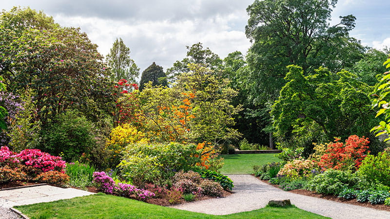
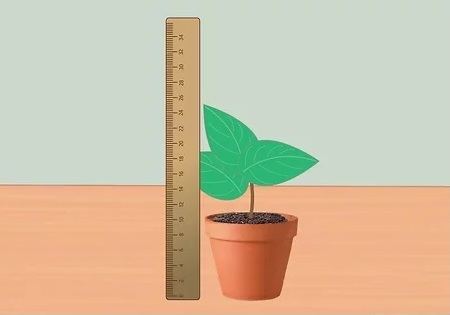
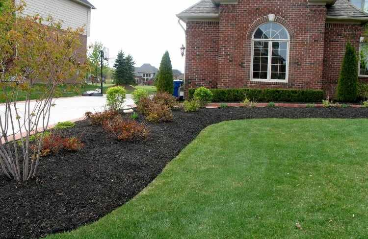
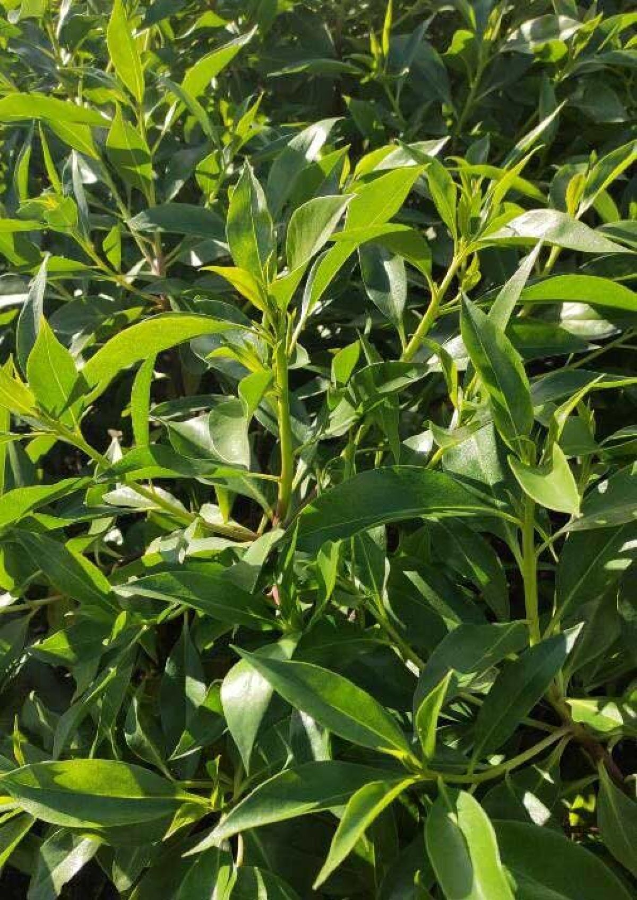
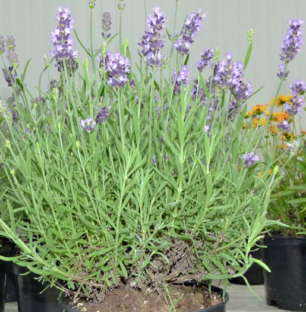
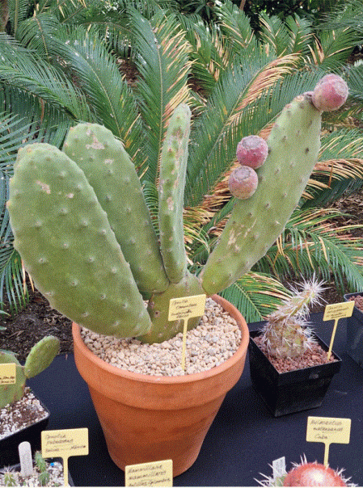
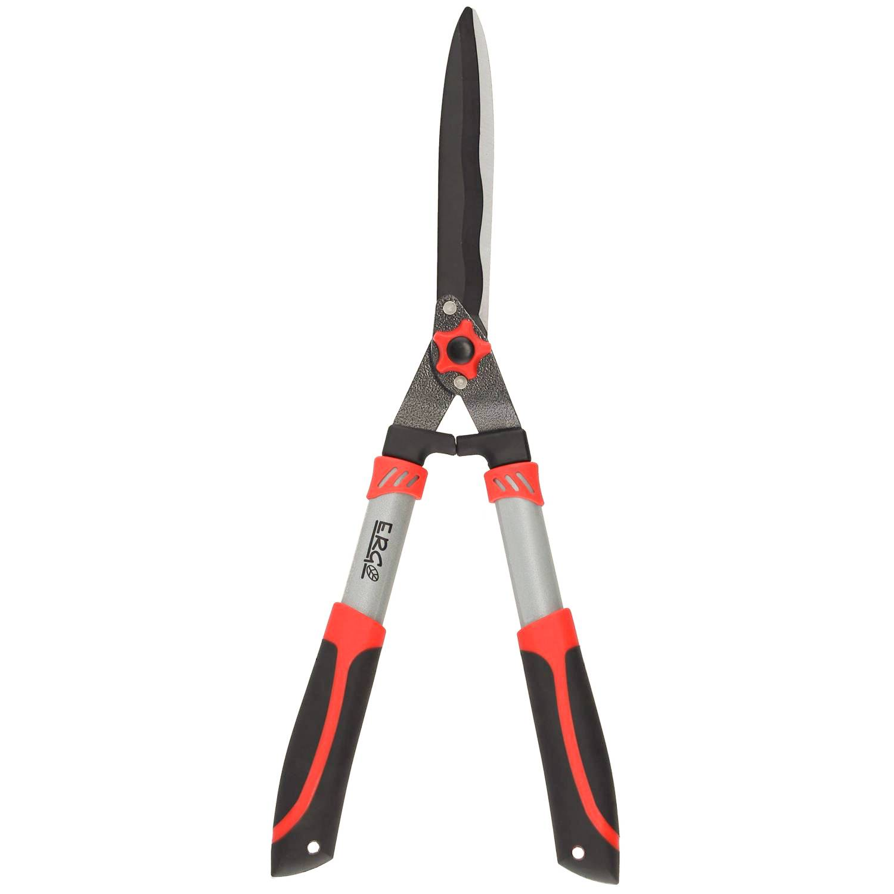
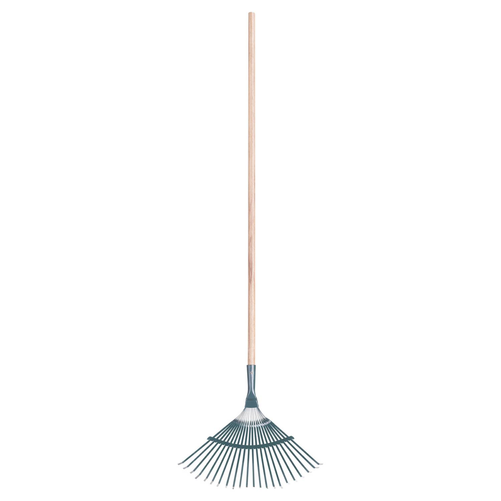
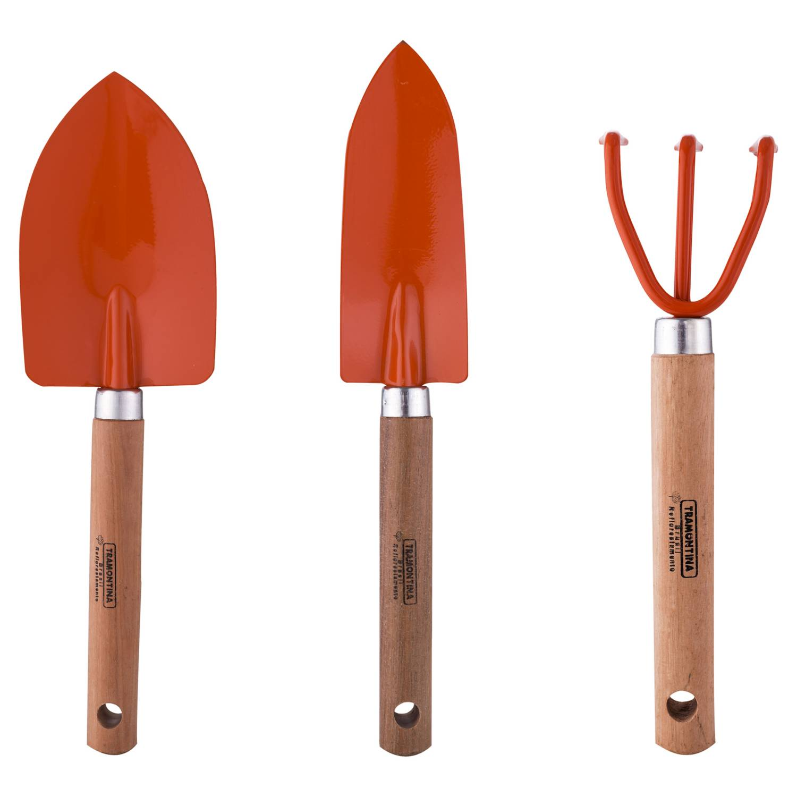

¡BIENVENIDOS A NUESTRA PÁGINA DE KING GARDEN! En esta página encontrarás una amplia variedad de plantas, herramientas de jardinería y consejos para el cuidado de tus plantas. Somos una tienda online especializada en plantas de interior y exterior, con envío a domicilio en todo Copiapó, Chile. Además, realizamos entregas en Paipote, Tierra Amarilla y Caldera. En King Garden, te ofrecemos: Plantas de Interior: Descubre nuestras hermosas plantas de interior que agregarán vida y belleza a tu hogar. Desde exuberantes helechos hasta elegantes lirios de la paz, tenemos la planta perfecta para cada espacio. Plantas de Exterior: Encuentra una amplia selección de plantas de exterior que prosperarán en tu jardín, patio o balcón. Ya sea que estés buscando coloridas flores, árboles frutales o plantas aromáticas, estamos aquí para ayudarte a crear un oasis verde al aire libre. Herramientas de Jardinería: Descubre nuestras herramientas de jardinería duraderas y funcionales que te ayudarán a cuidar tus plantas de manera efectiva. Desde palas y rastrillos hasta regaderas y tijeras de podar, tenemos todo lo que necesitas para mantener tu jardín en óptimas condiciones. Consejos de Cuidado de Plantas: ¿No estás seguro de cómo cuidar tus plantas? No te preocupes, estamos aquí para ayudarte. En nuestra página, encontrarás consejos prácticos y guías útiles sobre el riego, la poda, la exposición al sol y otros aspectos importantes para mantener tus plantas saludables y felices. Realizar un pedido en nuestra tienda online es fácil y conveniente. Simplemente selecciona los productos que deseas, completa el proceso de compra y nosotros nos encargaremos de entregártelos directamente en la puerta de tu casa.
¡BIENVENIDOS A NUESTRA PAGINA DE KING GARDEN!

¿QUIENES SOMOS?
En la ciudad chilena de Copiapó, existe una pequeña empresa llamada King Garden. Nos especializamos en ofrecer servicios de alta calidad y vanguardia para la creación, remodelación y mantenimiento de jardines y otros espacios al aire libre. La creación y mantenimiento de los jardines más exigentes de todo Santiago es nuestro principal objetivo. Queremos ser el líder de la industria y la empresa de referencia. Nos enorgullece brindar un servicio integral que se adapta a los requisitos individuales de cada uno de nuestros clientes. En cada proyecto que asumimos, nuestro equipo de profesionales altamente calificados se compromete a ofrecer soluciones especializadas y garantizar la satisfacción del cliente. La excelencia técnica es una prioridad en King Garden, pero también ponemos un fuerte énfasis en construir relaciones sólidas con nuestros clientes. Sus expectativas y deseos para sus jardines son importantes para nosotros y valoramos la importancia de escucharlo. Creemos que esta interacción constante nos permite diseñar espacios verdes que capturan con precisión la personalidad y forma de vida únicas de cada cliente. Trabajamos arduamente para informar y asesorar a nuestros clientes además de brindarles un trabajo de alta calidad como parte de nuestro compromiso. Queremos que se sienta seguro de su capacidad para comprender los diversos procedimientos relacionados con el mantenimiento y cuidado de sus jardines. Para mantener sus jardines florecientes y saludables durante todo el año, ofrecemos asesoramiento profesional sobre métodos de riego, selección de plantas, control de plagas y todo lo que sea necesario.
CONSEJOS RESPECTO A LA JARDINERIA
1. Antes que nada, hay que definir el jardín: Un jardín puede servir para plantar flores de mil colores, crear espacios apropiados para el esparcimiento y cultivar hortalizas. Por eso, desde el principio es necesario definir la función que este va a cumplir y delimitar claramente las áreas destinadas a cada fin. De esa manera tendremos claro qué es lo que queremos y nos será mucho más fácil visualizar el cómo lo construiremos. Si el presupuesto nos lo permite no está de más contratar los servicios de un paisajista que nos ayude con el diseño. Así, obtendremos una mezcla perfecta entre colores, alturas y ubicaciones.

2. Evaluar el clima de la zona: Antes de comprar las plantas debemos conocer a fondo las condiciones climáticas de la zona en la que pretendemos desarrollar nuestro jardín (cálida, desértica, tropical, húmeda, fría, etc.). De esa manera, al visitar el vivero podremos elegir, con la asesoría de los profesionales del lugar, flores, matas, hierbas y arbustos que realmente se adaptarán al clima en que serán sembradas.
3. Almacenaje de semillas: Uno de los mejores trucos de jardinería consiste en almacenar semillas, tallos y demás en tarros limpios y en sitios secos. Así evitamos que germinen por sí solas. Tambien es importante etiquetar adecuadamente las semillas almacenadas para evitar confusiones. Puedes utilizar etiquetas o marcar los tarros con el nombre de la planta y la fecha de almacenamiento. Esto te ayudará a recordar qué semillas tienes y cuándo las almacenaste, lo que facilitará la planificación de siembra en el futuro.

4. Tener en cuenta la altura de las plantas: A la hora de sembrar nuestras plantas debemos tener presente la altura de cada una de ellas, para que al crecer las más altas no priven de la luz a las más chicas causándoles la muerte. O por el contrario, plantar no considerando el exceso de sol para algunas.

5. Evaluar el sustrato o terreno: Existen plantas que para vivir requieren terrenos más arenosos y drenados, como los cactus; otras, como las heliconias, prefieren suelos más arcillosos y húmedos. Es decir: cada tipo necesita un sustrato específico. En consecuencia, antes de sembrar debemos conocer el tipo de terreno que hay en nuestro jardín y recubrirlo con composta orgánica. De esa manera fertilizamos de forma natural y promovemos la actividad biológica en el suelo, obteniendo como resultado plantas más saludables.La misma lógica aplica para las matas que sembramos en macetas.
CATÁLOGO DE PLANTAS
Mioporo
Precio: $2.000
Hortencias

Precio: $7.000
Lavanda
Precio: $5.000
Cactus
Precio: $3.500
CATÁLOGO DE HERRAMIENTAS
Tijeron de poda pasto

Marca: ERGO
Ancho: 12 cm
Alto: 3,5 cm
Material: Acero
Color: Negro
Precio: $23.990
Barrehojas 22 dientes

Marca: Gili
Ancho: 27 cm
Alto: 150 cm
Material: Metal
Material del mango: Madera
Precio: $3.990
Rastrillo de acero

Marca: Plasmet
Ancho: 40 cm
Alto: 130 cm
Material: Acero
Material del mango: Metal
Precio: $15.990
Kit de herramientas de jardín 3 piezas naranjo

Marca: Tramontina
Garantía: 6 meses
Características: Resistente y duradero
Condición del producto: Nuevo
Precio: $7.690
CATÁLOGO PRECIOS LIMPIEZA DE JARDÍN
FUMIGACION

Precio: $50.000
PODAR EL JARDIN

Precio: $20.000
MANTENCION COMPLETA

Precio: $130.000
CONTACTO
Si tienes alguna pregunta o comentario sobre nuestros productos o servicios, no dudes en ponerte en contacto con nosotros a través del siguiente formulario.Queremos asegurarnos de brindarte la mejor experiencia posible, por lo que valoramos tus comentarios y sugerencias.
| Índice | Nombre | Apellido | Edad | Sexo | Fecha de Nacimiento | Correo Electrónico | Acciones |
|---|